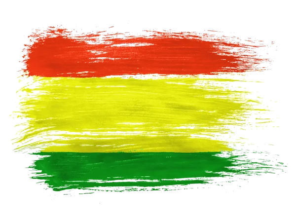
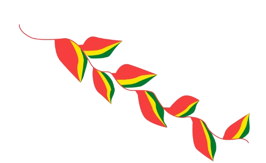

| Bolivianos, el hado propicio
coronó nuestros votos y anhelo;
es ya libre, ya libre este suelo,
ya cesó su servil condición. |
 |
 |
|
Al estruendo marcial que ayer fuera,
y al clamor de la guerra horroroso,
siguen hoy en contraste armonioso,
dulces himnos de paz y de unión. |
 |
- Las mesas para la Pachamama.
- Fiestas y celebraciones.
- El festival de Alasita.
|
- La festividad de las ñatitas.
- La importancia de la hoja de coca.
|
De la patria, el alto nombre
en glorioso esplendor conservemos
y en sus aras de nuevo juremos
¡Morir antes que esclavos vivir! |